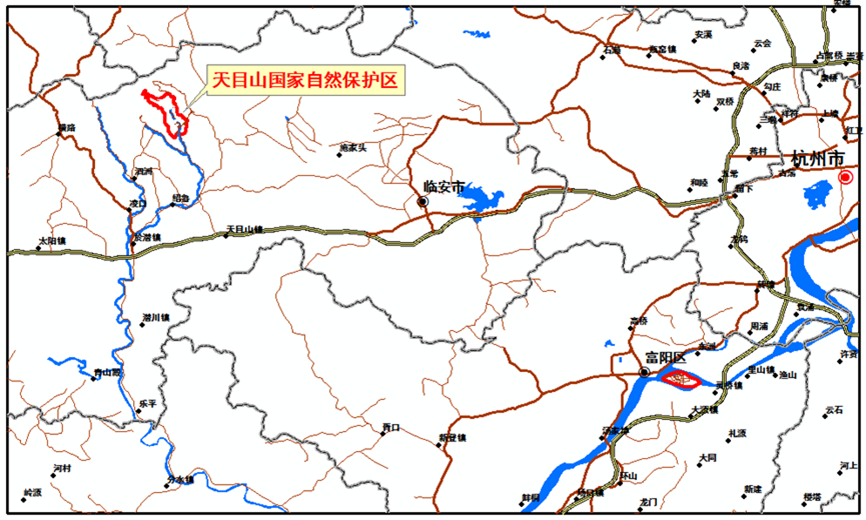

天目山位于浙江省西北临安市境内，由东、西天目山相对组成，1986年经国务院批准，天目山成为全国首批20个国家级自然保护区之一， 1996年被接纳为联合国教科文组织国际生物圈保护区网络成员。实习区位于西天目山，包括保护区及外围区域，范围大致为经度119°23´～119°28´、 纬度30°17´、30°21´，面积约75km2，最高海拔为1507m（仙人顶）。
实习区所在区域地质上属扬子准地台南缘钱塘凹陷褶皱带，地表结构以中山-深谷、丘陵-宽谷及小型山间盆地为特色。禅源寺后海拔450米以上， 全为侏罗系黄尖组的流纹斑岩、晶屑熔结凝灰岩分布区；后山们海拔450米以下为寒武系华严寺组灰岩、白云岩和西阳山组薄层条带状灰岩、泥质灰岩等； 禅源寺盆地内的松散堆积物都是山上的流纹斑岩、熔结凝灰岩类，巨块最大岩石直径10米以上。
天目山是长江、钱塘江部分支流发源地和分水岭，其南坡诸水汇合为天目溪，东南流经桐庐注入钱塘江。实习区的水系属钱塘江流域，有东关溪、西关溪、 双清溪、正清溪等溪流。东关溪源于与安吉县交界的桐杭岗，经关上、后院至白鹤，全长19公里，为天目溪之源；西关溪源出安吉龙王山， 经西关至钟家入东关溪，全长9.5公里，并在西关口龙潭建有蓄水100万立方米的水库及西关一、二级电站和鲍家电站；双清溪源于仙人顶，会元通、清凉、 堆玉等6涧，经禅源寺、大有至白鹤入天目溪，全长11.5公里；正清溪源出石鸡塘，经老庵、吴家至大有汇入双清溪，全长10.5公里。
实习区的植被类型垂直分布明显，海拔由低到高，依次为常绿阔叶林、常绿落叶阔叶混交林、高大柳杉林、落叶阔叶林、山顶矮林，此外还有竹林和人工柳杉林。
实习区有红壤、黄壤、棕黄壤和石灰土4个土类。红壤分布在海拔600～800米山坡，有黄红壤、乌红壤及幼红壤3个亚类；黄壤分布在海拔600～1200米地带， 有黄壤、乌黄壤、幼黄壤3个亚类；棕黄壤主要分布在海拔1200米以上地带；石灰土主要分布在青龙山、火焰山、朱陀岭、太子庵等局部地带。

实习区域位置图
实习区域图（
在线地图
）